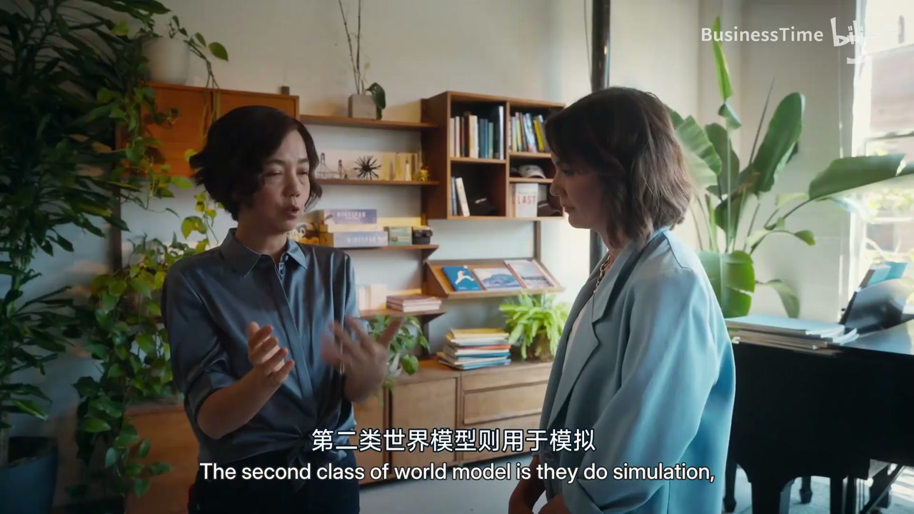
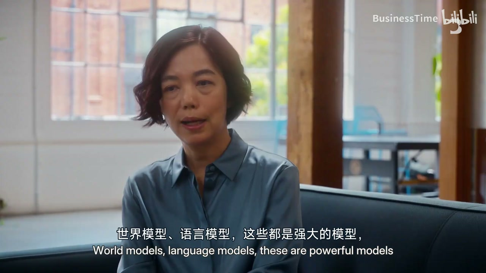
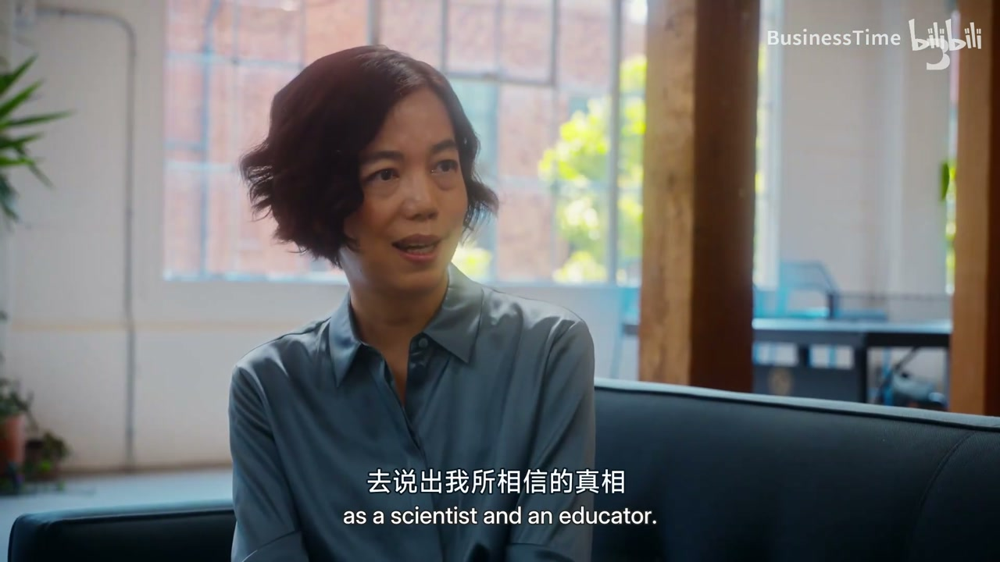
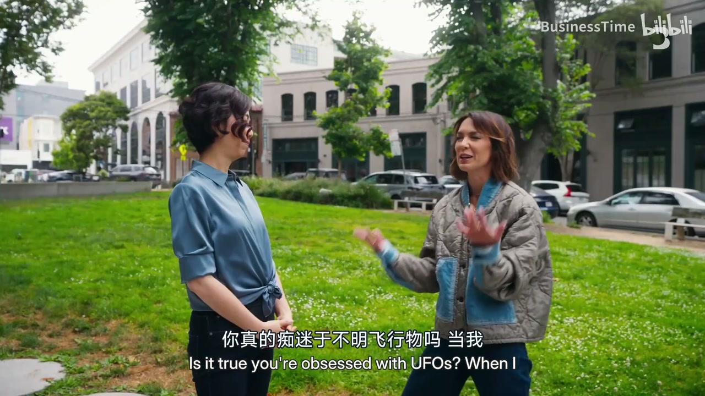

内容要点
彭博记者与李飞飞边走边聊：从「AI 教母」标签与 ImageNet 遗产，谈到她创办 World Labs、押注世界模型/空间智能——认为若要让机器成为科学与现实世界的伙伴，不能只靠大语言模型预测下一个词。访谈覆盖成长移民史、AlexNet 转折、Marble 可漫游 3D 世界、融资早期状态，以及她如何与政治人物沟通、为何警惕「神之复合」。口播为英语访谈的中文转述混杂，正文按公开身份与产品名校正。
ASR 多为英语口播的混乱转写：统一为李飞飞、ImageNet、AlexNet、World Labs、Marble、空间智能/世界模型；「神母」→教母称谓讨论。
知识结构
ImageNet 竞赛 + AlexNet/GPU 打开现代深度学习叙事。
编辑、行动、规划三功能；Marble 生成可探索 3D。
专注单点；资本与算力需求不确定；类比 LLM 爆发前。
向领导人给科学事实；强技术可被滥用；民主社会需共同掌控而非停摆。
从「看图」到「在物理世界里行动与规划」是下一章；技术越强，越要拒绝个人神谕式叙事。
00:00-07:30从 ImageNet 到拒绝人设
开场在公园：李飞飞被介绍为计算机视觉与 ImageNet 关键人物，也曾任斯坦福教授、谷歌云 AI、白宫顾问等。她强调自己更常谈 AI 与工作/人，而非空泛概念。
回顾成都童年、移民美国、普林斯顿与家庭清洁工周末、再到 Caltech 读博——强调那个「没钱没权力幻想」的科学家年代。ImageNet 把数据重要性推到台前，2012 AlexNet 用 GPU 训练成为转折；她不自然接受「教母」称呼，但拒绝让女性贡献再次被抹去。

07:30-15:00世界模型：编辑、行动、规划
相对 LLM 预测下一词，世界模型要对齐物理世界的状态：可编辑的场景、供机器人行动的状态估计、以及下一步规划（如杯子拿起放下）。Marble 作为一步：从图像/文本生成可前进转向的稳定 3D 世界，服务电影、游戏与机器人仿真数据。
训练依赖更丰富的视觉/相机数据与架构创新；业务仍早。对比桌上堆满项目的大公司，她强调小团队单点专注；领域仍早，类似聊天机器人爆发前夜。
15:00-24:05学生情绪、政策与神之复合
学生同时有焦虑、希望、兴奋与迷茫；若美国在技术变革中失去示范，全球信任会受损——应用超级技术创造经济与文化正向外溢。她向领导人沟通时自认角色是提供科学事实并纠正错误，而非站队极端批评。
担忧包括：更强世界模型被恶意武器化、教育沦为懒惰工具、CEO「神之复合」自以为知道人类最佳利益。主张民主社会共同掌控，而不是因恐惧把婴儿与洗澡水一起倒掉。结尾轻松谈到喜欢电影《超时空接触》（Contact）与保持好奇。



完整转录（918段）
以下文本由 Whisper 自动转录，可能存在识别误差；正文已按语境校正专有名词。
我聽說你喜歡走路聊天
是的,因為我們說了太多
而且我們公司也在這個公園旁邊
所以很棒
這裡的人都是人工智能者嗎?
我不知道其他人的說話
但我經常跟人工智能者聊天
但這是我唯一知道的
Fei-Fei Li是一個在電腦視覺界的巨型
一群人工智能者
專注於教導機器
她與Imagenet做了一段分析
一間視覺圖書
批評了現代人工智能的改革
獲得了她的名字
《人工智能的母親》
她從來都是人工智能中心的創始人
她是一位 Stanford 教授
一位 Google 執行官
一位美國總統的指導人
一位無可挑剔的人工智能協助者
我覺得人工智能的領導人
並不談論人工智能
他們談論人工智能和工作
並不談論人工智能
現在,她在她的職業簽證中
加入了一位創始人
你覺得在做什麼?
我感覺像一個老虎
而其餘的人工智能世界
雙倍增加了大型的語言模式
例如 chat.gpt 和 Claude
Li 正在考慮一個新的前線
世界模式
她在建立了人工智能
目標地預測
未來發生的事情
在現實世界中
而不是在一句話中的下一句話
所以,世界模式究竟能做到什麼?
LLMs 永遠無法做到
能否把言語燒掉?
Li 和她的創始人 World Labs
正在競爭在一場很激烈的競爭中
全都在同一邊
世界模式是世界智能的
未來發生的最大進步
你曾經想像過人工智能會這麼大?
我曾經想像過
整個世界會被人工智能
改變成人工智能的形式
文化的變化
社會的環境
我從來沒有想像過
她之前成為了領導人工智能的科學家
Li 只是個很奇怪的小孩
在世界觀看
你小時候是怎樣的?
我小時候在中國是80年代和90年代
我的城市是成都
我爸爸是個很奇怪的靈魂
所以我得到了一大堆的
追逐蚊子
和追逐寶寶
到山上去
畫畫和畫畫
和,你知道,讀書
剪髮、短髮、愛愛空氣和物理
你當時看到自己是個寶寶嗎?
當小孩的時候,你很年輕
你幾乎必須是個寶寶
只是因為你想要為自己發聲
但我喜歡自然、科學和物理
愛愛空氣和空氣
這些都是我的身份
你從中國移民到美國
在90年代
對
你當時是個年輕人嗎?
那是困難的
整個文化、語言、生活的轉變
作為一個年輕人
是最困難的一次
因為你發現自己是誰
突然間,你甚至不知道世界
李學了英文
畢業高中
在 Princeton 讀了科學
在週末進行家庭乾淨清潔的工作
然後追逐她的夢想到 Caltech
她得到她的 Ph.D.
並成為電腦科學家
你從小就研究藝術
對你來說是很神奇的
對
當時你覺得怎樣?
那是一個很美麗的時代
那是一個很正確的時代
因為沒有錢、沒有力量
沒有幻想、沒有興趣
我們當時就像科學家一樣
看著天空、看著海洋
我非常感興趣
AIC 如何?
你和我看到的不同嗎?
我們用眼睛
和眼睛
來推動感應器
來把這變成了腦中的信號
而腦中是在做電腦的
電腦不一樣
我們需要學習世界的模式
和理解物質、顏色、環境
很多的目的
就是為人們做出行動
你早上醒來
你抱著孩子
你下樓
準備早餐
拿著你的鑰匙
去做你的工作
我所說的一切
到目前為止
你已經做到了
用你的宇宙智慧
所以要用電腦才能做到
對
李是在2006年
她建立了Imagenet
一張14萬張照片的大型圖案
在那時最大的
21,000張圖案中
成立了
因為李看到
機械人物需要數據
才能變得更聰明
所以Imagenet的目的
是什麼呢?
沒有人在數據上
重視數據
我的學生們
和我都覺得
學習要被數據引導
在2010年
李把Imagenet
變成了比賽
誰能建立最好的策略
去正確地分析
最多的圖案
在2012年
傑弗·亨特恩的
特朗普大學隊
加入了AlexNet
是NVIDIA的
Graphics Cards的
結果是一個轉捩點
那組合
數量大量的數據
機械人物
和GPU的數據力量
成為了
Modern AI的金屬
以及李的歷史
你覺得什麼
當你看到這個
這並不是為了我們
這是整個人類
這真是主要的故事
因為這張照片
是在100年前
當工廠生產
在進一步的過程中
而大型的
城市界線
正在被建造
那是一個
歷史上的一刻
很驚訝
你在這裡
被認識了
但他們可以
把這張照片中央了嗎
快點
是真的
因為這裡
有更多空間
我問過你
在幾年前
你當了
AI的神母
你確實
你覺得
這張照片如何
你知道嗎
Emily
我永遠不會
稱自己為神母
任何一件事
記得Emily
當你問我
我回答
因為我沒有
自然地
認為自己
是神母
任何一件事
這不是我的性格
我專注於工作
如果我拒絕了
在那個地方
我們再次
會在一個
女性不被認識的
情況下
就像男性一樣
我想女性
是神母
任何創造
創造
創造
發掘
他們所做的
你現在
接受這個詞嗎
接受這個詞
是個很大的詞
我不會
說
我是菲菲
我是AI的神母
但是
人們
因為你
接受這個詞
藝術知識
長期被討論
在科技圈
和政策圈中
成為
直到
直到
恰恰PT
AI從一個
虛擬資源
到世界上
最討論科技的
大型語言模式
圖像
影片
突然
就像
所有人
都想成為
AI商業
坦白說
事情
已經很遠了
李莉
在2024年
創立了
自己的商店
你覺得
自己的商店
如何
我認為
在公司
我最擅長的
是從
我的創作者
和研究者
和科學家
他們都很擅長
但他們也很年輕
我感覺
像個媽媽
而且
很多時候
我會感覺
像個老虎媽媽
我經營這個商店
我會說
是高級的
李莉
正在進一步
向世界模式進展
如果
Imagenet教導AI
如何看
這個技術
是為了
帶領AI
到物理世界
因為
描寫
如何捕捉一個球
和捕捉一個球
是非常不同的
所以
她認為
這個技術
比 chatbots還要好
其他AI工業
都專注於LLM
LLM不可以做什麼
如果我們想
創造一個世界
讓我們繼續
推動科學發掘
讓我們希望
機械像機械
成為我們的夥伴
這全是
語言不可以
獨自做
建立世界模式
和宇宙智能
不是關於LLM
而是關於
未來的前線
和未來的章節
所以
世界模式
究竟是什麼
世界模式
在這點上
是一個擁擠的詞
我們看
宇宙智能
有三種
不同的功能
一種是編輯
另一種是企圖
第三種是計劃
編輯是
世界模式
出現了
美麗的畫面
讓人類
可以用
你可能
你正在思考Sora
世界模式的第二種
是進行企圖
但並不僅供人
還供機械人
他們專注於
在世界上
實際的狀態
基於物理上的
地區狀態
第三種世界模式
是計劃
讓人知道
接下來要做什麼
例如
如果你有杯子
世界模式
作為計劃人
計劃人
會讓機械人
知道
拿起來
然後放到
其他地方
這就是世界模式
與機械人
非常密切的
合作
Marble是世界模式的
第一步
創造世界模式的
第一步
它是讓任何人
生產一個
可以探索
可以編輯
的3D世界
從一個
視覺或文字標誌
這是一些
用家創造世界
的展示圖
你可以看到
他們設立了
一個房間
一個美麗的房間
現在你看著
你會覺得
這跟一張照片
完全不一樣
但這就是
世界模式的
實際上
是世界
因為我可以
透過它
就像遊戲
我可以向前移動
我可以轉圈
我可以去任何地方
這裡是一個
完全穩定的3D世界
所以現在
哪些公司
使用Marble
為什麼Marble是有用的
例如
在電影中
人們使用Marble
因為他們可以
在任何環境中
拍攝演員
遊戲開發者
Marble完全
減少了
需要的
資源和時間
我們也有
機械模式的例子
這是NVIDIA的
合作
他們使用
Marble的環境
來增加
機械模式的訓練
你用的是什麼訓練
其他人沒有的
這些模式
我們訓練
我們訓練這些模式
在兩件事上
一是特別準備的數據
畫面數據
比語言數據
更加有趣
在畫面上
有更多的資訊
還有鏡頭的資訊
另一方面
是機械模式
和建築設計的創新
因為沒有人
做過
創造世界的模式
對我們來說
創造3D世界
和4D世界的模式
你會說
這是秘密嗎
是的
我猜是
真正的秘密
是人類
就像我經常說的
但是的
我們建立了
資料、機械模式
和系統
你增加了一億美元
那你做的生意如何
生意還很早
我們在建築技術
的這段時間
還在做
建築技術
建築技術
並不是唯一的工作
當李晨
在建築技術上
落實了
建築技術的
未來的前線
建築技術
歡迎Fei-Fei Li
創作者和CEO
在世界的工廠
與劉伯格的
Emily Che
討論
所有的工作
都投放在機械模式
所以我想
在這個領域
特別是人類
人類資金
達到6億美元
但是
他們還是
不可以
盛載我的工具
我還是不可以
盛載我的亞馬遜工具
會不會
世界模式
世界工廠
關閉了
虛擬和現實的間隔
這是一個很大的問題
Emily
首先
機械模式
將會是
人類工廠
最重要的
改革
6億美元
太小了
如果您看
自駕車的投資
如果您看
語言模式的投資
花了
超過6億美元
我們會關閉
我們會關閉
我相信
世界工廠
是一種
最重要的技術
在虛擬和現實的間隔
當然
這就是希望
但Lee並不獨自
世界模式
是技術工廠
最新的承諾
與開發商
和技術巨頭
一同
努力建造
從設計
自駕車
機械模式
工廠
到
最終
機械模式
能夠
建造
虛擬工綜機器
你知道
這事
是意識不到
投 trousers
真正開發的
最新開發的
兩個營運
應該也是
世界有 Perseus
比你
對 reduce
例如
在
報告
感覺
讓我
變取不了
我
幫助你們
我們也有專注力
你知道,很多大公司
他們有很多東西在桌子上
我們有一個東西在桌子上
我們專注在那個東西上
Emily,很高興認識你
戰爭是如此嚴格的
為何要跟菲菲合作呢?
因為那裡有很多
強大的AI公司
我開始跟菲菲合作
以前很酷
2012年
對,我跟菲菲合作
我跟菲菲合作
你可以跟很多大公司合作
但你手上不可以改變
這個距離
這裡有50個人
你手上可以改變這個公司的距離
這是一個很美麗的事情
世界大公司可能是一個小團隊
但世界大公司的投資是巨大的
3億美元和增長
仍然是早期
這個領域還沒有決定如何建立
你會說是2019年
在聊天機上
所有人都在追求LLM
並在努力做到
但他們還沒有破壞數據
這就是世界大公司的狀況嗎?
對,這是一個很公平的描述
我們是早期的
我們比LLM早期
但會不會是一種爆炸
一種啊哈的一刻
我們會說
哦,現在我們明白了
如果我們做得對,是的
這就是科技和科技的魔法
當它碰到那一刻
它就變成魔法了
在AI和機械世界上
有些人說
這不是下一步的破壞
只是下一步的爆炸
你會說什麼呢?
我覺得
即使是好科技
也能夠爆炸
我認為
宇宙智慧和物理智慧
是基於機械智慧的
這是我認為的
最前線的問題
作為科學家、技術家
也作為企業家
我認為它們會提供
極佳的市場價值
建設世界模特兒
是非常具資源的
你需要更多的力量嗎?
你需要更多的資金
達到你想要的地步嗎?
我們還不知道
我們太早了
我們可能需要更多的力量
和更多的資源
你能得到嗎?
我不知道
哈哈
我們必須做好工作
才能獲得
建設世界模特兒
在示範階段
會花更多的時間和金錢
在這段時間
發展智慧的投資
已經增長了
美國人對它有強烈的感受
我相信你已經看過
前Google的CEO
Erik Schmidt
在學校畢業時
在學校畢業時
今天我們站在
另一個技術變化的邊界
你和學生花了很多時間
他們在說什麼?
如果他們害怕
恐懼是否正確?
是的
我和學生花了很多時間
甚至是學生
反映了一些
混淆的情緒
有焦慮
有希望
也有興奮
也有迷惘
也有同時
有一種勇氣和勇氣
當AI可以幫助我
做一些我以前做不到的事
還有一種勇氣和勇氣
如果AI能夠接受我的工作
嘿嘿
喔喔
AI必須走
如果美國
在這個技術變化中
失去信仰
讓全世界的人
向前走?
美國是一個
很重要的國家
對世界的影響
來說
如果我們不展示
一種正確的態度
和正確的方向
對於AI
所有人都會失去信仰
我並不願意
因為美國
在世界上
已經是一個
思考領導
在技術、科學、經濟上
如果我們能展示
我們可以製造
超級高的技術
和超級高的經濟價值
利用AI
產生一個
正確的文化影響
世界會看見
它作為一個角色
李也知道
AI和其影響的一部分
在她的歷史中
她在大型技術公司
和投資公司
創立了一個AI博物館
在斯坦福
並提醒了
美國總統
和美國的
AI政策
AI政策
AI的藝術知識
沒有任何藝術
它是人類所啟發的
人類所創造的
最重要的是
它對人類有影響
你提醒了
拜登總統
川普總統
聯合國
在技術和AI政策上
你如何向世界領導人
進行交流
我不會進行派對
我不會進行
提供極端的批評
或者是說
這是一個極端的批評
或者是說這是一個極端的批評
我提到的人
很重要知道
我是一個科學家
他們需要什麼
他們需要科學的事實
但我覺得
他們需要在他們的服務中
在他們的行為中
說出自己的意見
去推翻他們的錯誤
因為那是我的責任
他們錯誤了嗎
當然錯誤了
我們都錯誤了
這技術的動作很快
我沒有責怪他們
大部分的政策家
不從科學家的背景來源
什麼是政策的角色
那應該如何
首先
在科學上
而非在科技上
很多在AI政策世界
和人類從斯里克湖
討論人類的死亡
你擔心什麼
會錯誤的世界模式
如果我們給人們
更為現實的
更為強烈的AI
那會造成更多的機會
讓很壞的事情發生
世界模式
語言模式
這些是強烈的模式
可以造成錯誤和錯誤的情形
強烈的機械人物
可以被壞演員武器
而學生
沒有正確的目標
我擔心
科技能夠成為
一個懶惰的技術
而非一個
強烈的學習工具
我非常擔心
所以我覺得
很多事情
可以跟科技有關
不只是AI
可以跟電力有關
跟車子
跟PC
跟網路有關
現在最強烈的
AI總裁
被控告
有神的複雜
因為他們認為
他們知道
人類最好的東西
我認為
這對任何人來說
是危險的
因為他們認為
他們知道
人類最好的東西
作為一位行政總裁
作為一位行政總裁
我們所建立的目標
就是我們要
對社會的貢獻
和對人類的力量
這不是我們所做的
每一個決定
對人類的決定
但這不是我們所走的路嗎
這些是非常強烈的人
我認為
這太早了
來告訴Emily
我並不自私
我知道你所說的
但我也擔心
我認為
神的複雜性
並不強烈
我也不想這樣做
但我們有一個
民主社會
這是另一個原因
我認為
我們民主社會
不應該放棄AI
我們需要聲音
我們需要
共同的掌控
但現在
我們不要
用洗澡水
掌控
我們不應該
停止AI
因為這是一種
掌控的技術
可以探索
病毒的治癒
可以讓學生
和教授
可以幫助年輕人
所以這就是孩子
但現在
我們處於非常混亂的一段時間
這也是為什麼
我感到
我認為
我認為
我認為
我認為
我認為
我認為
我認為
我認為
我認為
我認為
我認為
我認為
現在
在她的第二次演出
她正在努力
讓它成為一個世界
讓它成為一個世界
作為科學家
為了助人
發展著新的AI戰略
我們應該不應該
讓它過渡
這在哪裡
這在哪裡
我們在五年內
這就是我
這就是我
我變得很自信
我變得很自信
歷史的循環
我可以說
我可以說
我可以說
我可以說
我可以說
我可以說
我可以說
我可以說
我可以說
我可以說
我可以說
我可以說
我可以說
我可以說
我可以說
我可以說
所有人都рим
人人我都值永無
人人我都值得
人人我都值得
t wheel
t wheel
t wheel
t wheel
人人都只要
人人都值得
人人都值得
萬萬 of all
萬萬
其實
我們在我們在我們在
革命中
沒有一個意義
我們其實
....
你覺得外星人在那裡嗎?
作為一個物理學生,你會學習Drake's equation
Drake's equation computes the probability of potential of outer space aliens
所以有可能會有數字
哇,你最喜歡的電影是哪一部呢?
《聯繫》,我的最愛是《聯繫》
對,《靈魂》在那裡
《聯繫》